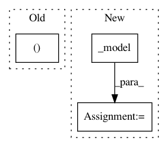

0cceb4f21605ba55c6b2f0eb0052b297d3cff6d1,art/estimators/classification/keras.py,KerasClassifier,predict,#KerasClassifier#Any#Any#Any#,488
Before Change
// Run predictions with batching
predictions = np.zeros((x_preprocessed.shape[0], self.nb_classes), dtype=ART_NUMPY_DTYPE)
for batch_index in range(int(np.ceil(x_preprocessed.shape[0] / float(batch_size)))):
begin, end = (
batch_index * batch_size,
min((batch_index + 1) * batch_size, x_preprocessed.shape[0]),
)
After Change
// Run predictions with batching
if training_mode:
predictions = self._model(x_preprocessed, training=training_mode)
else:
predictions = self._model.predict(x_preprocessed, batch_size=batch_size)
// Apply postprocessing
In pattern: SUPERPATTERN
Frequency: 3
Non-data size: 3
Instances
Project Name: IBM/adversarial-robustness-toolbox
Commit Name: 0cceb4f21605ba55c6b2f0eb0052b297d3cff6d1
Time: 2021-02-05
Author: beat.buesser@ie.ibm.com
File Name: art/estimators/classification/keras.py
Class Name: KerasClassifier
Method Name: predict
Project Name: bethgelab/foolbox
Commit Name: 2f1905529d25e62179850aa222f65ed685ff682f
Time: 2020-01-31
Author: git@jonasrauber.de
File Name: foolbox/ext/native/models/base.py
Class Name: TransformBoundsWrapper
Method Name: __call__
Project Name: dmlc/gluon-nlp
Commit Name: 6e4ae87778510fb8894583ad0a69d86ad6b6a724
Time: 2019-09-24
Author: linhaibin.eric@gmail.com
File Name: scripts/bert/run_pretraining.py
Class Name: ParallelBERT
Method Name: forward_backward